At Unity I produced three high-profile, real-time projects for Unity's external representation, showcasing the company's quality, innovation, and creativity. These shorts demonstrate the high bar achievable with Unity's current and upcoming features. While narrative-focused, each demo highlights specific technical advancements - from experimental features like hair simulation and new research in real-time area lights to upgraded tools for VFX, environment creation, and third-party integrations. These flagship demos emphasize technological progress in service of storytelling and game development, reinforcing that tech is always a means to an end.